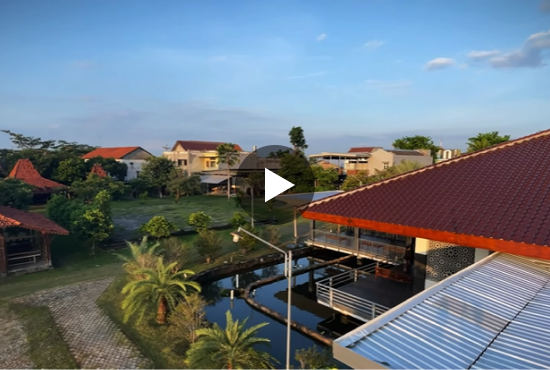

Video
Vidio Profil SMA IT HSI IDN
Ini adalah video Profil SMA IT HSI IDN yang berisi
tentang kegiatan pembelajaran, dan keseharian santri

Video
Vidio Serah Terima Santri Baru
Ini adalah Vidio serah terima santri baru tahun ajaran 2024/2025
dan insyaAllah SMA IT HSI IDN akan buka pendaftaran setiap tahunya.